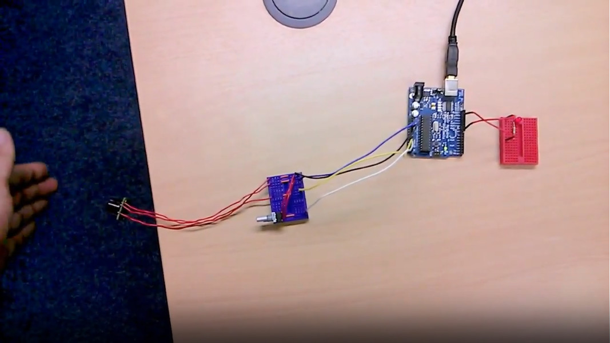
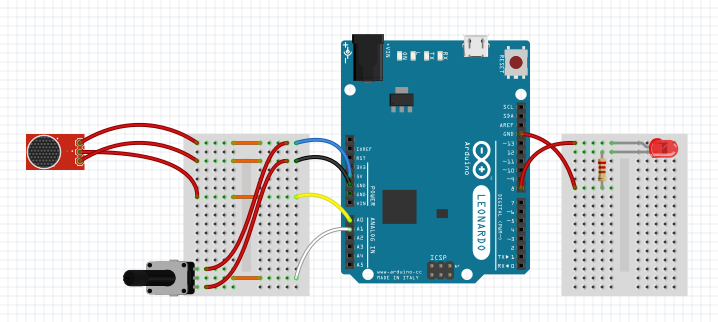

Intruder Alert
For a quick lunch-time electronics project, I’ve constructed an intruder alarm that can alert you any time somebody comes too close to your desk or cubicle. This project took me 45 minutes from start to finish including all coding, wiring and testing so—provided you’ve already got your lunch and eat it quickly—you too can be alerted to approaching co-workers before your lunch hour is up.

Using an Arduino for this project is overkill, as we could easily accomplish the same result without using a micro-controller at all, but it is a good introduction to using analogue electronics with the board.
In this project I’ve connected an ultrasonic range finder, a potentiometer and an LED to an Arduino to form a basic intruder alarm. The potentiometer acts as a threshold so you can easily tune the performance of the ultrasonic range finder to your local environment.
Very simply, every time the value from the ultrasonic range finder drops below the potentiometer’s threshold value, an alarm is triggered. In this case the alarm is an LED, but it could easily—if you wanted to annoy your cubicle neighbours—be something like a buzzer. If your Arduino is connected to a PC, you can also use the serial monitor to read the debug information of the two analogue devices.
This isn’t really a tutorial on how to use an Arduino but more of an example of what can be quickly accomplished by connecting a few simple components together and throwing a wee bit of code at a problem. If you want to build your own—or just look closer at how I built mine—keep reading for a BOM, Source Code and Schematic.
Bill of Materials
| Qty | Item | Source | Cost |
|---|---|---|---|
| 1 no. | Arduino Uno - R3 | CoolComponents | £19.98 |
| 1 no. | Ultrasonic Range Finder | CoolComponents | £24.48 |
| 1 no. | 10 kΩ Linear Pot | CoolComponents | £ 1.44 |
| 1 no. | 5mm Red LED | CoolComponents | £ 0.40 |
| 1 no. | 220Ω Resistor | CoolComponents | £ 0.06 |
| 12 no. | Jumper Wires | CoolComponents | £ 3.59 |
| 2 no. | Mini Bread-board | CoolComponents | £ 1.44 |
Arduino Sketch Source Code
https://gist.github.com/MikeCoats/df5969b87f739aaefda892576a22bb75
Fritzing Schematic
